一、安装Python3.X
1、Pythong官方网站：http://python.org/getit/ 下载windows的安装包。有以下几个选项：
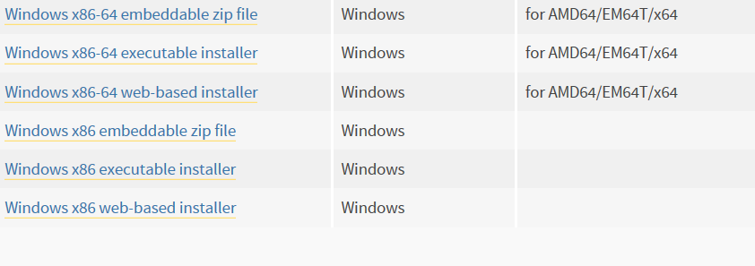
这里选择windows x86-64 excutable install安装包下载。
2、下载好以后，双击安装包安装。一路next,默认安装到C盘。也可更改路径，我装到了E盘。E:\Program Files (x86)\Python36-32\
3、配置环境变量：将python的安装目录添加进环境变量path后边。
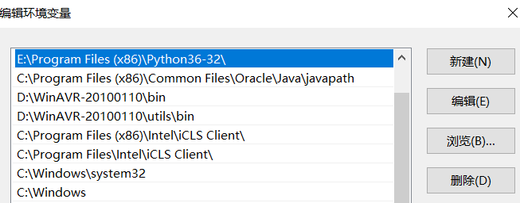
4、确认python 3.x是否安装成功。打开命令行输入python，提示如下说明安装成功。如果没有安装成功，就确认下步骤3是否正确。
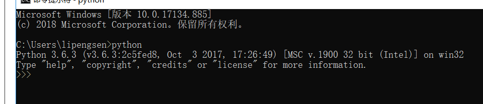
5、python 3.x本身有自带的IDE。简单的练习是完全没问题的。 如果需要做项目还是需要安装专业的编辑器PyCharm，Eclipse等。这里建议安装PyCharm,因 为大部分学python的，都装PyCharm。网上例子多，有问题好解决。咱是菜鸟，等啥时候成大佬了，，再搞点洋气的。
二、安装PyCharm软件
1、PyCharm官方软件安装包地址：http://www.jetbrains.com/pycharm/download/#section=windows 页面如下图所示
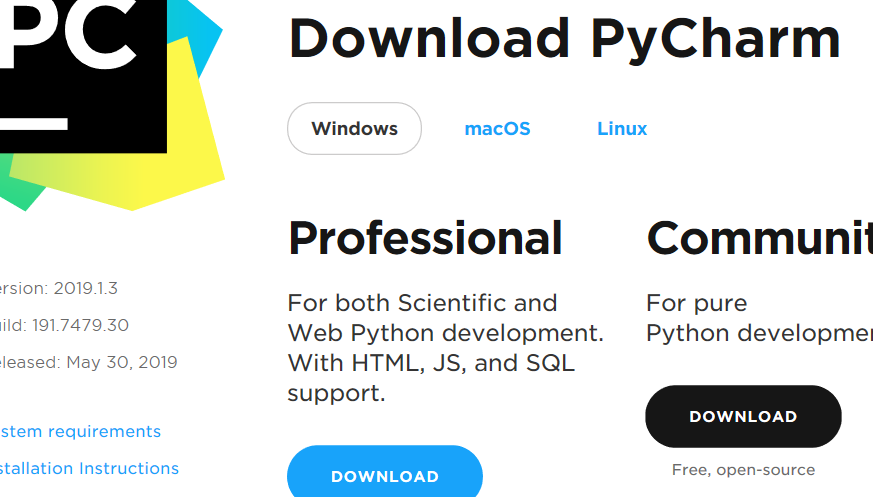
选择Community,因为这是免费的版本哈哈。。professional专业版是收钱的。现在更新到2019.1.3版本，，我用的是2017.3.4版本。
也可以装之前版本，学习用不建议装新版本，因为网上相关资料太少。
2、点击安装包，记得修改安装路径，我这里放的是E盘，修改好以后，Next。接下来是：
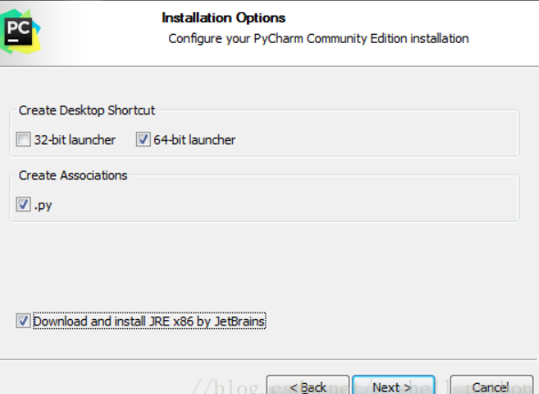
我是64位系统，选64-bit laucher其他的一样。next,如下界面，点击Install，，，这时候额可以先喝杯茶歇会。
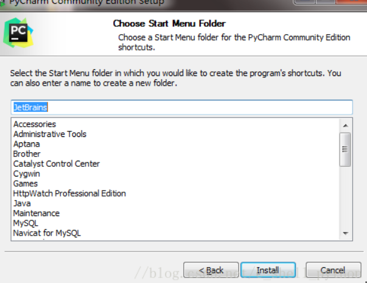
3、打开PyCharm软件如下所示，，
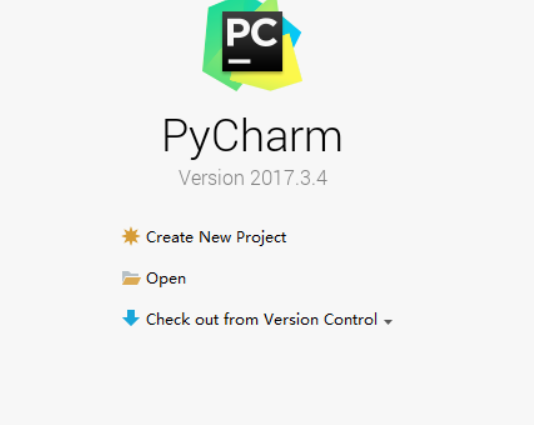
点击Creat New Project，如下图所示：
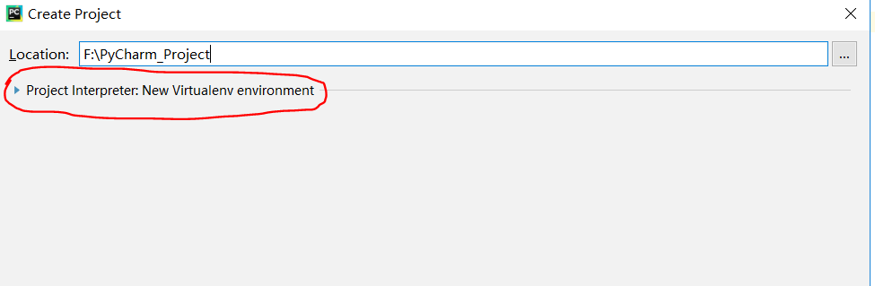
画红圈的地方点击，会显示如下：
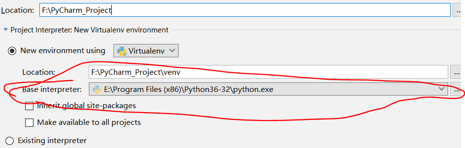
上图画红圈的地方表名PyCharm编辑器已经识别关联倒Pythony 3.x解释器了，如果没有说明你的Pythony 3.x没安装 好。
4、点击file-》new菜单，新建python文件，后缀.py。编写一个经典程序打印"hello word!" 如下图所示：
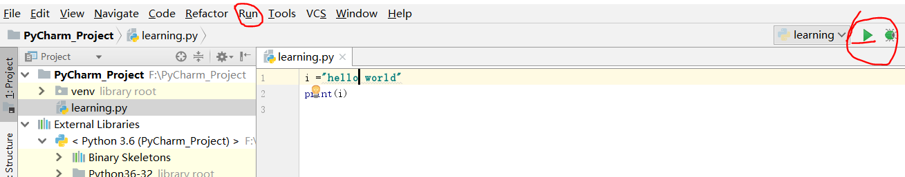
如上图两个红圈里的选项都可以运行程序，，运行结果如下图所示：
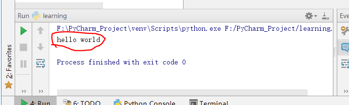
做到这儿，，内心是不是有点小激动。。。。O(∩_∩)O，，，太🐮了，，。。
三、PyCharm配置autopep8插件
autopep8是干啥的？？编码规范，可以检查你的代码规范不，还有可以自动规范你的代码。。
1、file->settings->project:[你的工程名]->Project Interpreter如下图所示：
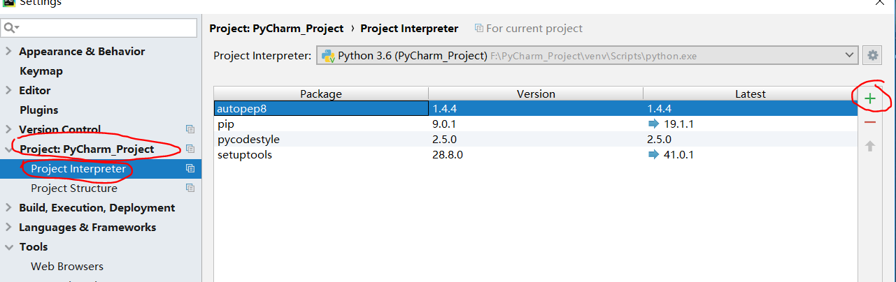
我的是装好的，有autopep插件。刚开始都没有，，点“+”，如下图所示：
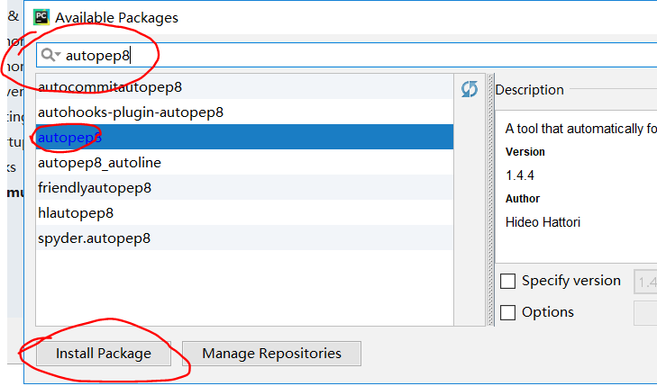
搜索autopep8,点击Install Package，安装完成之后坐下角会出现Packages installed successful:Installed packages等信息。
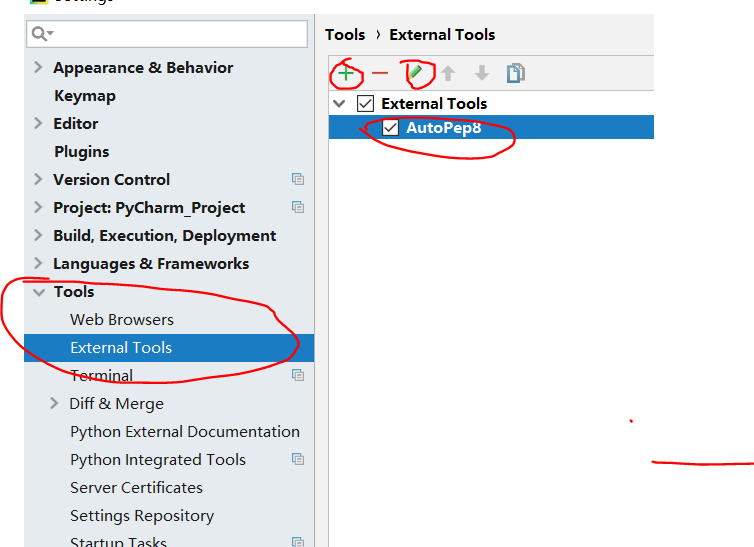
之后如上图所示点击Tools->External Tools->"+",出现下图：
会出现如下图所示：
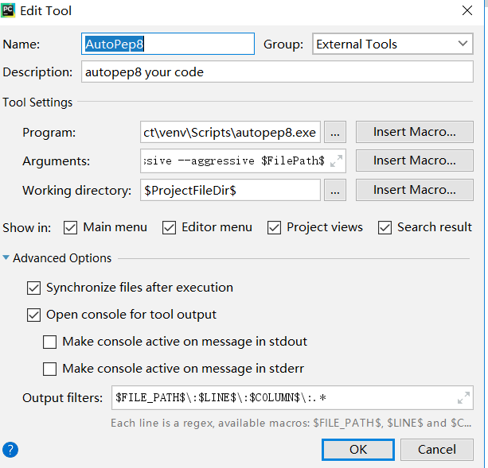
Name:自定义
Description:自定义
Program:F:\PyCharm_Project\venv\Scripts\autopep8.exe 备注：autopep8.exe安装目录，别忘了后缀.exe
Arguments:--in-place --aggressive --aggressive $FilePath$
Working directory:$ProjectFileDir$
Output filters:$FILE_PATH$\:$LINE$\:$COLUMN$\:.*
点击OK。就可以使用了。。。